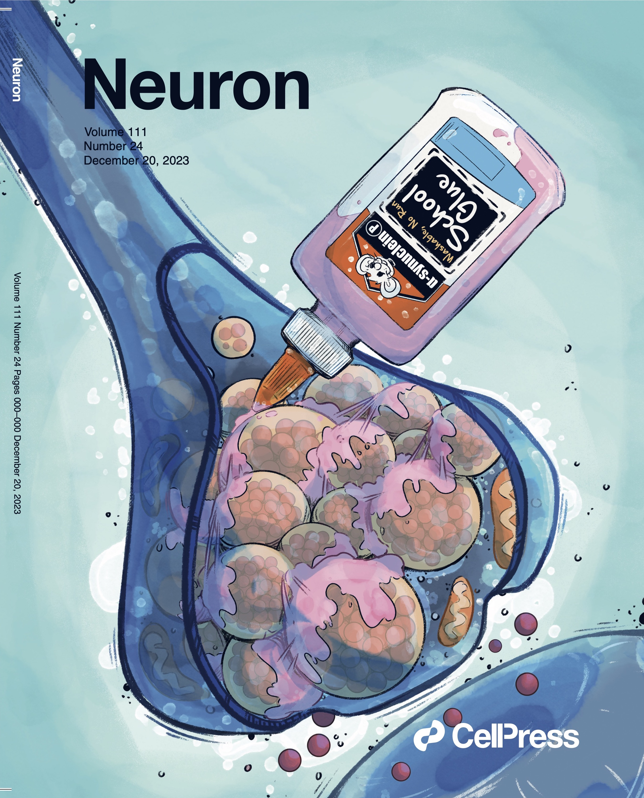

Publications (Peer reviewed)
TRIM46 contributes to microtubule fasciculation but is not required for axon specification or axon initial segment formation in vivo.
Journal of Neuroscience. TBD. DOI: TBD.
An evolutionarily conserved AnkyrinG-dependent motif clusters axonal K2P K+ channels.
Journal of Cell Biology. Accepted. 2024, 223 (10), DOI: 10.1083/jcb.202401140.
Adeno-Associated Virus-Encapsulated Alginate Microspheres Loaded in Collagen Gel Carriers for Localized Gene Transfer.
Advanced Healthcare Materials. Accepted. 2024, DOI: 10.1002/adhm.202303546.
*Selected for a cover image
Serine-129 phosphorylation of a-synuclein is an activity-dependent trigger for physiologic protein-protein interactions and synaptic function.
Neuron. Accepted. DOI: TBD.
*Independent collaboration
*Selected for a cover image

Immunoproximity biotinylation reveals the axon initial segment proteome.
Nature Communications. Accepted. DOI: TBD.
#Contributed equally
Antibody-directed extracellular proximity biotinylation reveals that Contactin-1 regulates axo-axonic innervation of axon initial segments.
Nature Communications. 2023, 14, 6797. DOI: 10.1038/s41467-023-42273-8.
*Highlighted in Nature Reviews Neuroscience.
Presynapses contain distinct actin nanostructures.
Journal of Cell Biology. 2023, 222(10): e202208110. DOI: 10.1083/jcb.202208110.
*Independent collaboration
*Selected for a cover image
Ankyrin-R links Kv3.3 to the spectrin cytoskeleton and is required for Purkinje neuron survival.
Journal of Neuroscience. 2022 Jan 5;42(1):2-15. DOI: 10.1523/JNEUROSCI.1132-21.2021.
*Selected for a cover image
Ankyrin-R regulates fast-spiking interneuron excitability through perineuronal nets and Kv3.1b K+ channels.
Elife. 2021, 10: e66491. DOI: 10.7554/eLife.66491.
Endogenously expressed Ranbp2 (Nup358) is not at the axon initial segment.
Journal of Cell Science. 2021, 134 (6), jcs256180. DOI: 10.1242/jcs.256180.
NuMA1 promotes axon initial segment assembly through inhibition of endocytosis.
Journal of Cell Biology. 2020, 219(2): e201907048. DOI: 10.1083/jcb.201907048.
The Japan Monkey Centre Primates Brain Imaging Repository for comparative neuroscience: an archive of digital records including records for endwangered species.
Primates. 2018, 59(6):553-570. DOI: 10.1007/s10329-018-0694-3.
Elavl3 regulates neuronal polarity through the alternative splicing of an embryo-specific exon in AnkyrinG.
Neuroscience Research. 2018, 135:13-20. DOI: 10.1016/j.neures.2018.03.008.
*Selected for a cover image
#Contributed equally
Elavl3 is essential for the maintenance of Purkinje neuron axons.
Scientific Reports. 2018 Feb 9;8(1):2722. DOI: 10.1038/s41598-018-21130-5.
Comparison of the behavioral effects of bupropion and psychostimulants.
Eur. J. Pharmacol. 2013, 718, 370-375. DOI: 10.1016/j.ejphar.2013.07.046.
Publications (Pre-print)
Activity-regulated micro-exon splicing programs underlie late-onset plasticity at the axon initial segment.
biorXiv. 2023, DOI: https://doi.org/10.1101/2023.10.29.564567.
Publication (Interview)
First person – Yuki Ogawa.
Journal of Cell Science. 2021, 134 (6), jcs258526.
Review
The energetic brain – A review from students to students.
Journal of Neurochemistry. 2019, 151(2):139-165. DOI: 10.1111/jnc.14829
Book
Hu protein and neurodegeneration.
Dictionary of brain environment (脳内環境辞典). 2017